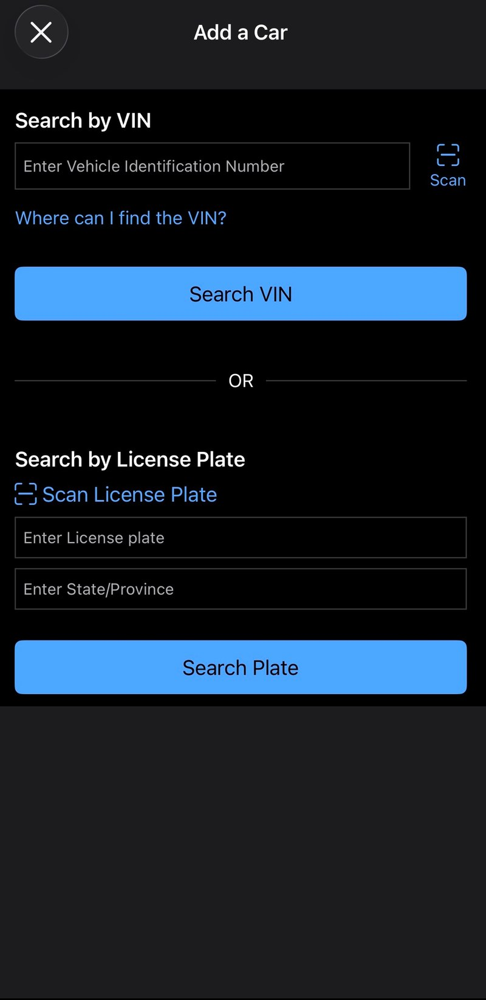
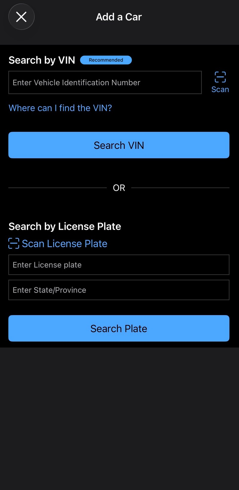

1. VIN input guidance
- Task step
- 1.2: Enter VIN or license plate
- Heuristic
- #6 Recognition rather than recall
- Severity
- Low
The Add a Car screen offers a VIN or a license plate and state, with no hint about which to use. A VIN is more precise and error-resistant, but the design doesn’t say so, so first-time users have to guess.
Fix: add a “Recommended” label next to the VIN option, keeping the license plate as an alternative.

